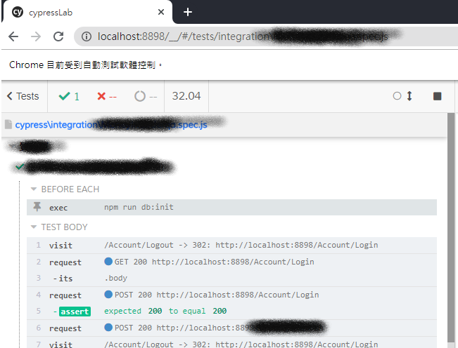

實際上撰寫 e2e 測試的時候，我們常常會需要做一些預設的測試資料在資料庫內，假設我今天想要測試會員在網站上購物的流程，那麼網站一定會需要有商品、會員、訂單等等資料結構。
在這樣的情況下，為了確保測試的可重複性，通常會在測試開始之前做測試資料的初始化；測試完畢之後做測試資料的清除。
Hook
如果有寫過前端測試，像是jest、mocha，那這部分應該很輕鬆就能理解，官網上也有說明，其實也沒有很困難，這些東西就只是代表，跑測試的時候，什麼時機點會觸發這些對應的事件，我們可以透過這些 Hook 來將我們要處理的事情，插入在這些時間點，通常在每個測試開始之前，我們會插入該測試所需要初始化的事件
官方的例子就已經蠻清楚的，如果還是有問題，其實就直接跑看看，觀察一下 Log 就行了；在下面的例子裡面，注意到hook可以放在最外層，也可以放在describe區段之內，兩者的意義是不同的
1 | beforeEach(() => { |
使用 node.js 執行初始化
文件有寫到使用的情境；我們目前希望在測試程式裡面要去影響到資料庫的內容，所以透過cy.exec()這個指令去執行node.js的指令
假設我的資料庫用的是mariaDB，因此先安裝好套件npm install mariaDB，再依照官方文件說明進行修改，就可以操作資料庫了
1 | // appConfig.js |
1 | // package.json |
實際在測試程式就利用beforeEach的hook來執行初始化的動作
1 | describe('質檢單', () => { |
執行測試後，會發現左側有Hook的名稱

我不想串真實資料怎麼辦
那就用假資料來做測試吧，可能有一些情境是你不想再跑測試的時候，讓他去吃到 API 過來的資料，而是想要模擬一個固定的回傳結果來測試；這樣的做法就是讓測試與外部相依隔離開來，所以會這樣做的情況，一般來說就已經不會再是整合測試的範疇，而是逐漸往單元測試靠攏了，當然具體如何還是要看實際的程式碼與應用情境
1 | cy.route(url); |
模擬一個假資料回應
cypress.io提供route語法，因此可以將指定的url，替換為預先指定好的回應結果
例如下列的指令，將會監聽符合條件的網址請求，並回應一個 name 為 Phoebe 的使用者資料
1 | cy.route(/users\/\d+/, { id: 1, name: 'Phoebe' }); |
當請求網址符合剛才的正則表達式，實際取得的回應結果就會是剛才的假資料
1 | $.get('https://localhost:7777/users/1337', (data) => { |
模擬多個假資料回應
在下面這個範例透過as()、cy.wait()的方式，先幫route設定一個別名，然後透過wait去等候這個指令的執行結果，然後我們可以再次透過route去重複指定相同 url 的回應結果；透過相同的別名就可以取得新的回應結果了
1 | cy.server(); |
利用檔案來模擬回應結果
上面的做法都是將假資料寫在程式內，但為了方便管理，透過指定將靜態資料讀取進來，在將它設定為回應結果，應該是比較實務的做法，我們可以透過cy.fixture()做到這件事情，語法的細節可以參考官網文件
1 | cy.fixture(filePath); |
一種方式是先用fixture接著再route
1 | cy.fixture('user').then((user) => { |
另外一種方式是直接一行解決掉，使用route的時候跟他說資料來自fixture
1 | cy.server(); |
當然也可以透過別名來串聯這兩個指令，具體還是看自己喜歡哪種方式
1 | cy.fixture('user').as('fxUser'); |
上述的所有範例都取自官網
cy.route()可以拿來做假資料，也可以直接發出請求cy.request()會真的跟指定end-point發出請求，cy.route()則不一定
結論
測試資料的初始化、清除。要做到怎樣的程度，應該還是要看環境決定，如果只是在工程師自己開發環境在練習可能還無所謂，能跑就好；但是，如果不是在開發環境內，可能就要考慮一下，如果資料庫有髒資料的話會不會有甚麼影響，最好能夠避免這些副作用，cypress能夠做到整合測試資料的初始化與清除，但它也能夠用stub的方式模擬回應結果來隔絕外部相依，這些應該是看情境搭配，相輔相成的
如果我想要完全模擬使用者的操作行為，也做好了測試資料的初始化與清除作業，但是偏偏流程當中有一個環節是跟其他公司的服務串接的，例如串接外部金流，但是對方卻沒有提供測試信用卡給你刷，可是你卻又要測試刷卡購物流程，難道你會每次測試都拿自己的卡出來真的刷嗎？肯定不會嘛，所以勢必要針對這個服務做隔離，當然目的還是再整合測試，但是卻隔絕了外部環境的相依，畢竟我們要測試的是刷卡購物的流程，而不是這張卡到底能不能刷過；如果我們要測試刷卡不過的購物流程，那就再寫一個模擬刷卡失敗的情境就好了
對於cypress的使用我還在摸著石頭過河，文章若有錯誤的地方，請不吝指正，謝謝